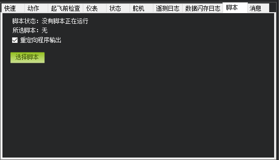

飞行数据 介绍和使用
概述：
飞行数据 是MP地面站的默认主界面，它可以很直观的显示你的无人机状态，包括姿态、速度、高度、离家距离、GPS位置信息等等
它一共可以划分为3大功能区域：
- 飞行HUD窗口（左上）
- 状态显示和控制选项栏（左下）
- 地图及飞机实时位置信息（右）
下面开始详细介绍每一个区域的功能
主界面介绍视图 ：
状态显示和飞行控制栏 介绍：
主要显示6个参数：当前高度 、低速、航点距离、偏航角度（航向角）、升降速度、DistToMav(无人机离家的距离)
这个功能栏，主要是可以对无人机做实时的模式切换、任务控制、高度、速度控制
原始传感器 :可以查看原始传感器的数据，做一些性能或者故障分析
游戏摇杆：可以设置USB手柄映射一个遥控器通道，对飞行器进行控制（不建议使用，传统数传丢包可能导致控制不流畅）
可以帮助新手检查和判断飞行器是否能满足飞行条件
比如GPS卫星数量提示、电压提示
不满足会显示红色，通过为绿色
还可以通过EDIT按钮，进行编辑相关提示选项和阈值
状态：详细飞行数据显示
这里可以显示所有的飞控数据，包括传感器数据，通道输入输出数据等等
可以用于飞行和调试
显示值都比较简单和明了，内容过多，不再一一介绍舵机 -通道控制
舵机-虽然名字为舵机，实际也不一定是用于舵机控制
实际是一个PWM通道输出控制，在多旋翼中，接了电调的通道是无法控制的
可以实时控制一个空余通道的PWM值输出遥测日志
用于加载和播放地面站记录的日志数据闪存日志
通过Mavlink 下载闪存日志：可以USB或者数传下载飞控内部记录的飞行日志
回顾日志：打开闪存日志可以做详细的分析
自动分析：使用程序自动分析功能自动分析闪存日志，直接得出分析结果，可以很明了查看飞行器的震动值、罗盘等数据是否健康达标。
创建KML+gpx
PX4.bin转.log
创建Matlab文件脚本

加载控制脚本